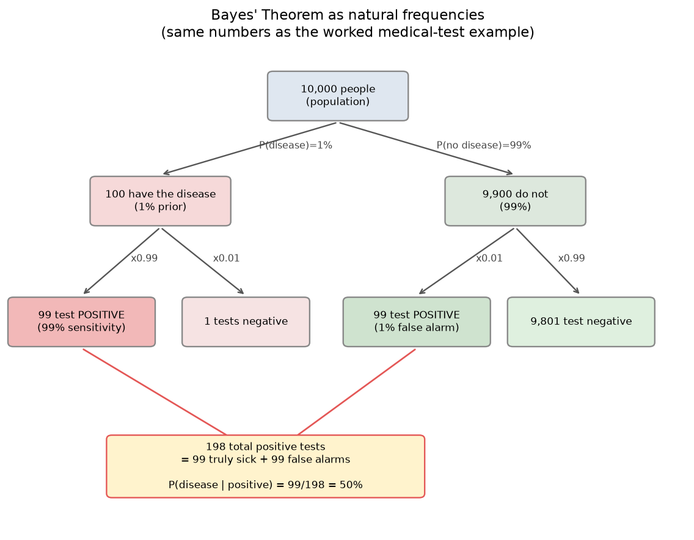
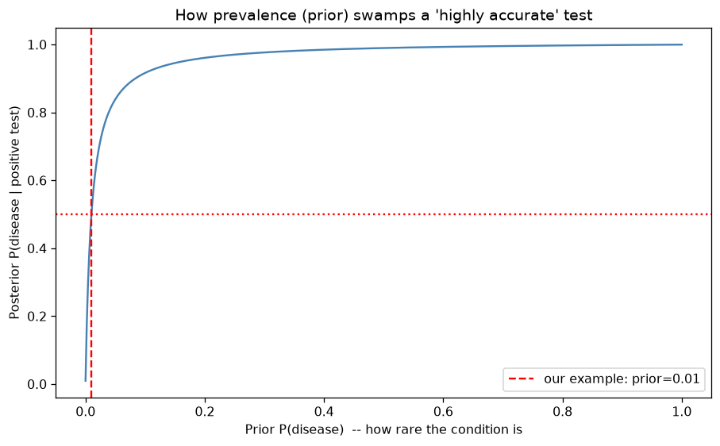

Chapter 4: Bayes' Theorem - Updating Beliefs With Evidence
The idea this chapter builds toward
Bayes' Theorem is a formula for exactly one thing: flipping a conditional probability around, turning $P(\text{evidence} \mid \text{hypothesis})$ (which is often easy to know) into $P(\text{hypothesis} \mid \text{evidence})$ (which is usually what you actually want to know, but is hard to get directly). This single flip is the foundation of medical test interpretation, spam filters, Naive Bayes classifiers, A/B test interpretation, and - much later, in Chapter 17 - the entire Bayesian school of statistics and Bayesian deep learning.
Intuition, in one breath: Your new belief is your old belief, reweighted by how well the evidence matches it - and rare hypotheses survive even strong-looking evidence surprisingly poorly.
Deriving it from what you already know
Recall from Chapter 3, conditional probability was defined two ways:
$$P(B \mid A) = \frac{P(A \text{ and } B)}{P(A)} \qquad P(A \mid B) = \frac{P(A \text{ and } B)}{P(B)}$$
Both equations share the same numerator, $P(A \text{ and } B)$. Rearranging each to solve for that shared numerator:
$$P(A \text{ and } B) = P(B\mid A) \cdot P(A) = P(A \mid B) \cdot P(B)$$
Now just take the right two pieces of that chain and divide:
$$P(A \mid B) = \frac{P(B \mid A) \cdot P(A)}{P(B)}$$
That's Bayes' Theorem. It is not some separate mysterious law - it's pure algebra falling out of the definition of conditional probability you already learned. If this derivation feels shaky, re-read Chapter 3's conditional probability section before continuing - everything below depends on trusting this one rearrangement.
Renaming the pieces so it's usable
In practice we write it with names that make the "updating a belief" story obvious:
$$\underbrace{P(H \mid E)}_{\text{posterior}} = \frac{\overbrace{P(E \mid H)}^{\text{likelihood}} \cdot \overbrace{P(H)}^{\text{prior}}}{\underbrace{P(E)}_{\text{evidence}}}$$
- Prior $P(H)$: how likely you thought the hypothesis was before seeing any evidence.
- Likelihood $P(E \mid H)$: if the hypothesis were true, how likely is it you'd see this particular evidence?
- Posterior $P(H \mid E)$: your updated belief in the hypothesis, after accounting for the evidence.
- Evidence $P(E)$: the overall probability of seeing this evidence at all, under every possible hypothesis (acts as a normalizing constant so the posterior is a valid probability).
The entire story in one sentence: posterior ∝ likelihood × prior - your new belief is your old belief, reweighted by how well the evidence matches it.
The bars show, out of 10,000 people at your chosen prior: how many truly have the condition, and how many test positive among the sick (true positives) vs. among the healthy (false positives). Drag the prior down toward realistic rare-condition levels and watch the false-alarm bar start to dominate, even at high likelihood values.
The backstory - a minister's thought experiment, and why it was controversial for 200 years
Reverend Thomas Bayes, an English Presbyterian minister and amateur mathematician, worked this out in the 1740s/50s, apparently motivated by a philosophical/theological question: can we reason rigorously from observed effects back to their unknown causes? His essay was only published posthumously in 1763 by a friend, Richard Price. The derivation you worked through above (two equations for the same joint probability, set equal, rearranged) is essentially the exact algebraic path Bayes himself walked - it is not a complicated theorem, which is part of why it's remarkable it hadn't been written down clearly before him. The hard part was never the algebra; it was the philosophical leap of treating an unknown hypothesis (like "this coin is biased" or "this patient has the disease") as something that itself has a probability distribution that can be updated - at the time, many mathematicians considered probability to only sensibly apply to genuinely random future events (like dice), not to fixed-but-unknown facts about the world. This exact philosophical fork - "can an unknown fixed parameter have a probability?" - is the root of the frequentist-vs-Bayesian divide that still structures statistics today, and that we'll address head-on in Chapter 17.
It was the French mathematician Pierre-Simon Laplace, working independently a few decades later and with far more mathematical firepower, who really developed Bayesian reasoning into a usable general tool - Laplace used it for things like estimating the probability a given birth would be a boy or girl, and for astronomical problems (inferring a planet's unknown orbit parameters from a handful of noisy telescope observations - structurally the same "infer the hidden cause from the observed evidence" problem as the medical test example below).
The classic worked example: medical testing (do this by hand, it's the whole point)
A disease affects 1% of the population. A test for it is 99% accurate: if you have the disease, it correctly tests positive 99% of the time (true positive rate); if you don't have the disease, it correctly tests negative 99% of the time (meaning a 1% false positive rate). You test positive. What's the probability you actually have the disease?
Gut instinct says "99%, obviously, the test is 99% accurate." This gut instinct is wrong, and Bayes' Theorem shows exactly why.
Let $H$ = "has the disease", $E$ = "tests positive." We're given: - $P(H) = 0.01$ (prior: 1% of population has it) - $P(E \mid H) = 0.99$ (likelihood: true positive rate) - $P(E \mid \text{not } H) = 0.01$ (false positive rate)
We need $P(E)$ - the total probability of testing positive, regardless of whether you actually have the disease. There are two ways to test positive: you have the disease and correctly test positive, OR you don't have the disease and incorrectly test positive. Add those two paths:
$$P(E) = P(E\mid H)P(H) + P(E \mid \text{not }H)P(\text{not }H) = (0.99)(0.01) + (0.01)(0.99) = 0.0099 + 0.0099 = 0.0198$$
Now plug into Bayes:
$$P(H \mid E) = \frac{P(E\mid H) P(H)}{P(E)} = \frac{0.0099}{0.0198} = 0.5$$

The exact same calculation, but as counts of actual people instead of abstract probabilities - this "natural frequency" framing is often far more intuitive than the formula. Start with 10,000 people. Split them by the true (but hidden) disease status: 100 sick, 9,900 healthy. Now split each of those groups by test result, using the test's known accuracy. You end up with two separate streams of "tested positive" people - 99 who are truly sick, and 99 who are healthy but got a false alarm - and because those two streams are the same size, a positive test is only a coin flip's worth of evidence for actually having the disease, despite the test being "99% accurate." Nothing here is more than counting - the formula in the previous paragraph is just this same tree written in fractions instead of raw counts.
Only 50% - a coin flip - despite a "99% accurate" test. Why? Because the disease is rare (1% prior), so even a small false-positive rate (1%) generates almost as many false alarms (0.0099) as the true positive rate generates real detections (0.0099) - the two are exactly equal here because of how the specific numbers were chosen, but the lesson generalizes: when a condition is rare, most positive test results are false positives, even with a very accurate test. This single insight underlies why screening for rare diseases/rare fraud/rare anomalies in huge populations is so much harder than people's intuition suggests, and why ML models evaluated on heavily imbalanced data (e.g. 1% fraud rate) need more than just "accuracy" to be trusted (we revisit this exact imbalance problem concretely in Chapter 12 when discussing error types, and again when discussing classifier evaluation).
Bayes' Theorem as sequential updating
A powerful reframing: the posterior from one piece of evidence becomes the prior for the next piece of evidence. If you tested positive twice (independently), you'd plug $P(H) = 0.5$ (yesterday's posterior) back in as today's prior, and recompute. This "update as new evidence arrives" framing is exactly how Bayesian statistics (Chapter 17) and Bayesian online learning work, and it mirrors something you already know intuitively: good detectives update their suspicions incrementally as each new clue arrives, rather than re-deriving everything from scratch.
Reconstructing it yourself - a second, cleaner formula hiding inside the first
Redoing the medical-test arithmetic by hand reveals something slightly annoying: you had to compute $P(E)$ by adding together two separate products, and that denominator recomputation is extra bookkeeping every single time. If your answer to "how do I avoid recomputing this messy denominator every update" is to track the hypothesis's odds instead of its raw probability - let's test that guess directly.
Define the odds of a hypothesis as $\text{odds}(H) = \frac{P(H)}{P(\text{not }H)}$ (e.g., odds of $\frac{1}{99}$ means "1 in 100 total," the same information as $P(H)=0.01$, just repackaged). Now write Bayes' Theorem for $H$ and separately for "not $H$," then divide one equation by the other:
$$\frac{P(H\mid E)}{P(\text{not }H\mid E)} = \frac{P(E\mid H)}{P(E\mid \text{not }H)} \times \frac{P(H)}{P(\text{not }H)}$$
Notice $P(E)$ - the troublesome denominator - appears in both the numerator and denominator of this ratio and cancels out completely. This gives the clean odds form of Bayes' Theorem:
$$\text{posterior odds} = \text{likelihood ratio} \times \text{prior odds}$$
Rerunning the medical example this way: prior odds $=\frac{0.01}{0.99}\approx 0.0101$. Likelihood ratio $=\frac{P(E\mid H)}{P(E\mid\text{not }H)} = \frac{0.99}{0.01} = 99$. Posterior odds $= 0.0101 \times 99 \approx 1.0$ - odds of 1-to-1, i.e. exactly 50%, matching the earlier answer without ever computing $P(E)$ directly. This isn't just a shortcut for hand calculation: it's the form of Bayes' Theorem used throughout forensic science and intelligence analysis (where it's called the likelihood-ratio test), specifically because you can report "this evidence is 99 times more consistent with guilt than innocence" without needing to know the overall base rate of guilt in the population at all - the likelihood ratio alone tells you exactly how hard a single piece of evidence should move your belief, decoupled from how rare the hypothesis was to begin with.
Connecting this to Naive Bayes classifiers (a sneak peek)
A spam filter asks: "given these words in the email ($E$), what's $P(\text{spam} \mid E)$?" It estimates $P(\text{word} \mid \text{spam})$ and $P(\text{word}\mid\text{not spam})$ from a labeled training set (that's the "likelihood"), combines them with the prior $P(\text{spam})$ = overall spam rate, and uses Bayes' Theorem to get the posterior probability of spam given the actual words seen. The "naive" part is an independence assumption we'll touch on later - but structurally, it's just this chapter's formula applied word by word.
More real-world examples of Bayesian updating
- Spam filters: described below, but worth restating as its own example - $P(\text{spam}\mid\text{"free money" appears})$ is computed from how often that phrase appears in known spam vs known ham (the likelihoods) and the overall spam rate (the prior).
- Legal reasoning ("prosecutor's fallacy"): a DNA match has a 1-in-a-million random match probability. A prosecutor might claim "so there's a 1-in-a-million chance the defendant is innocent" - but this confuses $P(\text{match}\mid\text{innocent})$ with $P(\text{innocent}\mid\text{match})$, exactly the Chapter 3 asymmetry. In a city of 10 million people, you'd expect about 10 innocent people to also match by chance - the prior (how many potential suspects even exist) matters enormously, exactly like the disease-prevalence effect above.
- Spam/fraud detection at scale: credit card fraud is rare (low prior, like the disease), so even a fraud-detector with excellent accuracy generates many false alarms relative to true frauds caught - exactly the same math as the medical test, and the reason real fraud systems are tuned around this tradeoff rather than just "accuracy."
- Everyday reasoning: hearing hoofbeats, you assume horses, not zebras (unless you're in a region where zebras are common) - "common things are common" is just a prior speaking, and unusual-sounding evidence needs proportionally strong likelihood ratios to overturn a confident prior. This folk wisdom is literally Bayes' Theorem in plain English.
Figures

How the posterior P(disease | positive test) changes as the prior (disease prevalence) sweeps from near 0 to 1, for a 99%-accurate test. Our worked example (prior=0.01) is marked.
Run it yourself
book/code/ch04_bayes_theorem.py recomputes the medical test example exactly as above, then simulates 200,000 fake "patients" (1% actually sick, tested with the stated accuracy) and counts, among those who tested positive, what fraction are actually sick - confirming the 50% result empirically rather than just algebraically. It also shows how the posterior changes as you vary the disease's true prevalence (prior), which is the most important lever in the whole formula.
python book/code/ch04_bayes_theorem.py
Why This Matters - In AI and In Everyday Life
In AI / machine learning:
- Spam filters and Naive Bayes classifiers: directly compute P(spam | words seen) from P(words | spam) and a prior spam rate -- this chapter's formula, applied word by word.
- Bayesian A/B testing and Bayesian deep learning: treat an unknown conversion rate or an unknown weight as a distribution to be updated, using exactly this posterior-equals-likelihood-times-prior recipe.
- RLHF and Bayesian preference modeling start from a prior: reward models and RLHF pipelines place a prior over human preferences (often implicitly, via the pretrained model) and update it with relatively few human comparisons, which is why Bayesian regularization helps keep preference estimates stable on small feedback datasets.
- Naive Bayes spam filters and LLM token likelihoods both apply this formula at scale: a transformer assigns $P(\text{next token} \mid \text{context})$ by conditioning on an enormous evidence set, and the "posterior becomes next prior" machinery is exactly what autoregressive decoding does as it appends each generated token to the context.
In everyday, non-AI life:
- Medical diagnosis: doctors (should) combine a test's accuracy with how common a disease actually is in the patient's group -- exactly the worked example in this chapter, and a real source of diagnostic error when skipped.
- Legal reasoning: evaluating DNA or forensic evidence against how many people could plausibly match by chance (the "prosecutor's fallacy" mentioned above) is Bayes' Theorem misapplied in real courtrooms, with real consequences.
Worked example - by hand, larger
Suppose a fraud detector flags transactions. Fraud is rare: $P(\text{fraud}) = 0.02$ (a 2% prior). If a transaction is fraud, the detector flags it with probability $0.90$ (a true positive rate). If it is legitimate, the detector still flags it with probability $0.08$ (a false positive rate). A transaction gets flagged - what's $P(\text{fraud} \mid \text{flag})$?
First the evidence, the total flag rate, by the two disjoint paths: $$P(\text{flag}) = P(\text{flag}\mid\text{fraud})P(\text{fraud}) + P(\text{flag}\mid\text{legit})P(\text{legit}) = (0.90)(0.02) + (0.08)(0.98) = 0.018 + 0.0784 = 0.0964$$ Then Bayes: $$P(\text{fraud}\mid\text{flag}) = \frac{P(\text{flag}\mid\text{fraud})P(\text{fraud})}{P(\text{flag})} = \frac{0.018}{0.0964} \approx 0.1867$$ So a flag is only about an 18.7% signal of real fraud.
Now do it the odds way, to see the denominator vanish. Prior odds $= \frac{0.02}{0.98} \approx 0.02041$. Likelihood ratio $= \frac{0.90}{0.08} = 11.25$. Posterior odds $= 0.02041 \times 11.25 \approx 0.2296$. Convert back: $\frac{0.2296}{1 + 0.2296} \approx 0.1867$ - the same answer, without ever computing $P(\text{flag})$ explicitly.
Suppose a second, independent detector also flags, with the same $0.90$ and $0.08$ rates. Yesterday's posterior $0.1867$ becomes today's prior. New evidence rate: $(0.90)(0.1867) + (0.08)(0.8133) = 0.1680 + 0.0651 = 0.2331$. New posterior: $\frac{0.1680}{0.2331} \approx 0.721$. Two independent flags push belief from 2% to 72% - this is sequential updating made concrete.
When the thing you're hunting is rare, a single flag barely moves your belief, but independent flags multiply together into real evidence - the prior rules the first look, and only repeated, independent likelihood ratios can drag it far.
Check your understanding
- In the medical example, if the disease were more common (say 50% prior instead of 1%), would you expect the posterior $P(H\mid E)$ to go up or down relative to 50%? Compute it to check your intuition.
- Explain in plain words why $P(E)$ in the denominator is computed as a sum of two products, rather than just being "given" directly.
- Why does "posterior becomes next prior" make sequential evidence-gathering mathematically consistent, in your own words?
Exercises
Exercise 1 - Compute a posterior with realistic numbers
A test for a rare bug in code has prior $P(\text{bug}) = 0.05$, true positive rate $0.95$, false positive rate $0.10$. A test is positive - what is $P(\text{bug} \mid \text{positive})$?
Show solution
$P(\text{positive}) = (0.95)(0.05) + (0.10)(0.95) = 0.0475 + 0.095 = 0.1425$. Then $P(\text{bug}\mid\text{positive}) = \frac{0.0475}{0.1425} \approx 0.333$. Despite a 95% accurate test, a positive result means only a one-in-three chance of an actual bug, because the prior is low and false positives are plentiful among the large clean majority.Exercise 2 - Odds-form update
Using exercise 1's numbers, compute the posterior odds directly and convert to a probability, verifying it matches.
Show solution
Prior odds $= \frac{0.05}{0.95} \approx 0.05263$. Likelihood ratio $= \frac{0.95}{0.10} = 9.5$. Posterior odds $= 0.05263 \times 9.5 \approx 0.5$. Convert: $\frac{0.5}{1.5} = 0.333$. Matches exercise 1, confirming the odds form needs no explicit $P(\text{positive})$ computation.Exercise 3 - Conceptual: why accuracy alone misleads on imbalanced data
A fraud classifier is "99% accurate" on data where 1% of cases are fraud. Explain why this might mean it catches almost no fraud, and connect it to Bayes.
Show solution
If the model predicts "not fraud" for everything, it is 99% accurate (it gets the 99% majority right) while achieving zero recall on real fraud. Accuracy hides the base-rate problem: Bayes tells us $P(\text{fraud}\mid\text{flagged})$ depends on the prior and the false positive rate, and with a 1% prior even a moderately noisy detector produces alarms that are mostly false. This is exactly why imbalanced ML is evaluated with precision/recall or AUC, not raw accuracy.What's next
Chapter 5 formalizes the idea of a random variable - a way to attach numbers to random outcomes - and introduces the standard discrete probability distributions (Bernoulli, Binomial, Poisson) that show up constantly in both classical statistics and in modeling events like click-through rates, number of errors per batch, and classification outcomes.